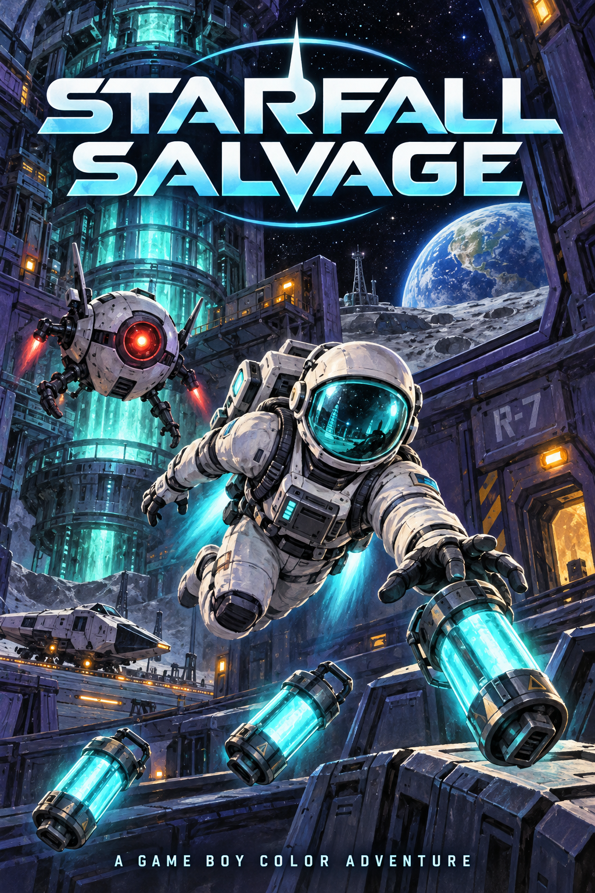
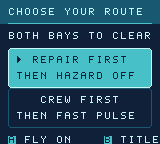
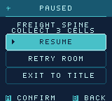
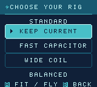
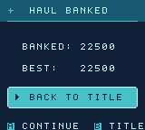
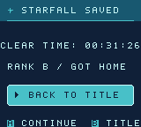

Full Campaign Flight Manual By Stephan Arrington Documentation revised 2026-10-14

Illustrated box art, not a gameplay frame.
Welcome aboard
An original Game Boy Color adventure by Stephan Arrington. Pilot a salvage astronaut through a damaged station: thrust, drift, brake, restore its systems and bring the recovered cargo home.
Your first flight
1. Choose Story. At the title use Up/Down to highlight Story or Continue, then A to confirm. Select Arcade the same way. B goes back or cancels where a previous screen exists; it has no action at the title.
2. Choose a job and rig. Up/Down selects a mission; Left/Right selects an unlocked pulse rig.
3. Read the objective before launch. The flight deck and next-bay cards show the task. A launches directly from those cards. Initial Arcade, retry and restored launch checkpoints may show READY TO FLY; press A there to begin. Start opens Pause for objective help.
4. Fly the objective. Tap a direction to gain momentum. Release to drift; hold B to brake. Press A for a ready close-range pulse.
5. Deliver. After completing the objective, return beside the real dock terminal. Delivery is automatic. In large rooms the dock is a specific safe area, not the entire bottom edge.
Native 1.2 emulator capture: Up/Down chooses a mode and A begins. Ship, stars and exhaust animate while the title theme plays; there is no intro to wait through.
Controls and drift
Handheld
Browser default
Action
D-pad
Arrow keys
Thrust in play; Up/Down chooses in menus
A
Z
Pulse in play; confirm selection in menus
B
X
Brake/interact in play; back/cancel in menus
Start
Enter
Pause and resume
Select
P / Shift
Open exit options during play
Browser keys match the supplied game export. Click the game area to focus it, or use the on-screen controller. Follow the displayed controls if you choose a different emulator or remap its keys.
Make momentum work for you
Thrust builds speed rather than moving your astronaut instantly. Releasing the D-pad leaves a drift. Start braking before a corner, then steer out of it. B also permits slower, more precise movement while held.
A pulse checks nearby enemies when you press A. Watch A READY / A WAIT; holding A does not repeatedly fire. Keep enough space to evade before spending a pulse.
Read the HUD
H is your hull, initially three points. The objective counter tracks cargo or nodes; in escort rooms R shows crew hull. M is the mission and BAY is the room within that mission. Direction hints point toward the next target, crew route or dock.
Salvage, relays and repair
Salvage: approach all three
Cells, shards and beacons collect automatically when your astronaut drifts within their close range. Recover all three, then return beside the dock terminal. Merely approaching the dock before the objective is complete does not clear the room.
Ordered relays: the flashing node
Find the currently flashing node and hold B continuously for 30 eligible gameplay updates while within 12 pixels. Activate the three nodes in their indicated order. The HUD shows NODE and the current hold count.
Releasing B or leaving the active node resets its partial hold. Another node cannot be activated early. Once all three are online, return to the dock.
Repair: any unfinished station
Hold B continuously for 45 eligible gameplay updates within 12 pixels of an unfinished station. Repair all three in any order, then dock. You can choose the station order that gives the safest route around the enemy.
Release B, move away, or switch to another station and the partial hold resets. Completed stations remain completed within that attempt. Paused time does not advance these counters.
Interaction
Required hold
Order
Relay
30 eligible updates
Flashing node only
Repair
45 eligible updates
Any unfinished station
Optional gold cache
20 eligible updates
One mission badge
Crew and guardian encounters
Escort: stay close, then bring both home
The crew is a physical actor with two hull points. It follows its authored route only while you remain within 24 pixels. Moving farther away stops it. Stay nearby to guide it through all three real route markers.
Enemy charges and active floor hazards can hurt the crew. Defend it with a ready pulse and use cover. To wait before a dangerous crossing, move out of follow range while the crew is still on safe floor, then regroup when the route clears.
The third marker alone is insufficient. The crew must finish its full route at the dock, and your astronaut must also return beside the terminal to deliver. Losing the crew ends the attempt; retry restores it.
Guardian: three separate openings
Every mission ends with a guardian that has three shield points. Evade its committed dash, then close in while the HUD says CORE OPEN. A pulse within your rig radius removes one point, at most once per opening.
Pulsing outside OPEN can stun the guardian but does not damage its shield. After the third successful hit it releases three collectible cores: recover them and dock to finish the mission.
Native 1.2 emulator capture: the crew follows your astronaut through the room.Native 1.2 emulator capture: CORE OPEN - A PULSE marks the guardian damage window.
Enemies, hazards and safe docks
Threat
Read it
Your response
Charger
Amber locks a straight dash
Leave the aimed line; return during recovery
Sweeper
Locks one horizontal or vertical axis
Cross its locked axis; use solid cover
Hunter
Moves between dashes; targets crew in escort
Keep space and protect the crew route
A drone damages actors during its red charge. Amber warning, ordinary recovery and cyan stun are approach windows. A charge can stop against solid cover. In a guardian room, use the explicit CORE OPEN status for damage opportunities.
Floor colors are a clock
Dim vent or beam markings are safe. Amber warns; red is active and damaging. Floor cycles begin after the first completed objective marker, or at launch for a guardian. Wait on safe floor rather than drifting into a red lane.
Your pulse affects the enemy. It does not turn off floor hazards. The mission power-route perk can disable the second middle room's hazard before you enter it.
The dock protects; the room still matters
In Story, only the area beside the actual terminal is the safe dock. The classic small Arcade maps use their bottom dock strip. Stay near the terminal when delivering; the lower edge of a scrolling room is not a universal safe lane.
Your astronaut and the crew briefly resist repeat damage after a hit. At zero astronaut hull, or zero crew hull in escort, the room attempt fails.
Pulse rigs and route choices
Rig
Radius
Reload
Stun
Tradeoff
Standard
24 px
120
60
Balanced default
Fast Capacitor
20 px
72
30
More shots; closer range and shorter stun
Wide Coil
36 px
180
60
Reach farther; wait longer
Overcharge
24 px
180
90
Longer stun; wait longer
Reload and stun are eligible gameplay updates. At an ideal 60 updates per second, 120 is about two seconds. Rigs replace one another; they do not stack. A guardian still allows only one shield hit per opening.
Unlock
First mission clear
Wide Coil
01 - Salvage Signal
Fast Capacitor
02 - Bulkhead Circuit
Overcharge
09 - Heat Grid
Choose which middle room comes first
After the arrival room, choose REPAIR FIRST or RELAYS FIRST to take the power route, or CREW FIRST or TOOLS FIRST for supply. Up/Down selects; A launches directly. Power first disables the hazard in the other middle bay after power is complete.
Taking the supply route first shortens pulse reload in the power route to at most 72 updates. The selected rig's radius and stun remain unchanged. You must complete both routes before the guardian. B returns to the title with the checkpoint retained.
Flight-deck Left/Right selects unlocked rigs. Arcade CHANGE RIG is optional: Up/Down selects, A fits the rig and flies onward, and B returns to the dock without applying a choice.

Native 1.2 route choice: the highlighted card shows the benefit for the other middle bay. Both bays must be cleared.
Six zones, eighteen jobs
In each zone, its two regular jobs may be chosen in either order. Clear both to unlock its final job. Clearing that third job opens the next zone. Each job has four large rooms: arrival, both middle routes, then guardian and extraction.
Job
Zone
Mission
Access
01
Wreck Hull
Salvage Signal
Regular job
02
Wreck Hull
Bulkhead Circuit
Regular job
03
Wreck Hull
Rescue Passage
Final job
04
Coolant Works
Pressure Network
Regular job
05
Coolant Works
Crew Transfer
Regular job
06
Coolant Works
Coolant Restart
Final job
07
Solar Foundry
Foundry Access
Regular job
08
Solar Foundry
Shift Evacuation
Regular job
09
Solar Foundry
Heat Grid
Final job
10
Signal Archive
Archive Uplink
Regular job
11
Signal Archive
Signal Rescue
Regular job
12
Signal Archive
Lens Alignment
Final job
13
Outer Array
Beacon Array
Regular job
14
Outer Array
Navigation Rescue
Regular job
15
Outer Array
Ground The Jammer
Final job
16
Star Engine
Ignition Trail
Regular job
17
Star Engine
Last Signal
Regular job
18
Star Engine
Starfall Heart
Final job
Mission salvage score and caches
First-clearing a mission awards 300 salvage; replaying it awards no extra credit. Salvage is not spent in a shop. After MISSION COMPLETE, A opens the flight deck on an available unfinished job; A launches it, or change the selection first. Cleared jobs remain available for replay.
Gold cache pads award one optional badge per mission after B is held nearby for 20 updates. The badge is committed at the next confirmed checkpoint. Caches are bonus challenges, not prerequisites for access.
Pause, retry and checkpoints
Pause and retry
Start: pause or resume. Pause repeats the current objective. Up/Down chooses Resume, Retry Room or Exit to Title; A confirms. B resumes without resetting the attempt. Retry Room restarts the current room with full hull and crew, keeping earlier completed rooms and the rig. A at failure retries; B goes back to the title.
Select during play: open abandon confirmation. A exits to the title; B cancels into Pause. In Arcade, selecting Fresh Sortie and confirming A loses the unbanked haul. B never selects Retry or Fresh Sortie.

Native 1.2 emulator capture: Up/Down selects a pause option. A confirms it; B resumes the current attempt.
Story saves to cartridge SRAM
Story writes a checkpoint on accepted room entry and after completed rooms, branch choices and mission results. The saved card stage, rig, route progress, mission clears, score and campaign statistics can be restored by selecting Continue and pressing A at the title.
Continue restores the saved stage: flight deck, route choice, result, mission completion, ending or room-entry briefing. It does not save mid-room position or partial holds. CHECKPOINT SAVED appears on retained entry briefings. SAVE WRITE FAILED means the write was not confirmed; do not assume progress persisted.
New Story and global achievements
With a Story checkpoint present, select New Story at the title and press A. A confirms the reset; B cancels. New Story resets campaign progress, mission salvage score, clear-time counters and current rig. Global optional badges, unlocked rigs and best banked Arcade score are retained.
Arcade: risk another sector or bank
Arcade is a separate repeating route through the 12 classic small maps, including its Warden. Start with three hull and Standard. Hull carries between sectors; each successful dock repairs one point, up to three.
At the dock
Choice
Fly On - default
A starts the next sector with the current rig
Change Rig - optional
Choose Keep Current or an offer; A fits and flies
Bank Haul
Select with Up/Down and A to secure the haul
B - Back / Exit
Rig screen returns to dock; dock opens exit options
CHANGE RIG defaults to KEEP CURRENT. Offers rotate among Standard, Fast Capacitor, Wide Coil, Overcharge and Hull Patch. Short descriptions show each tradeoff. Hull Patch fully repairs the hull and resets the pulse to Standard. Rigs do not stack.
Native 1.2 dock: Bank Haul is selected here. Fly On is the default choice; Change Rig is optional.

Native 1.2 rig choice: A fits and flies; B returns to the dock without applying a choice.
Complete, bank and return
Earn, bank, lose
Completed dock deliveries award 300 in sector 1, 600 in sector 2, and so on up to 3,000 per sector from sector 10. The haul caps at 60,000. Pickups without delivery do not award score.
At zero hull the entire unbanked haul is lost. Returning to the title or restarting also abandons that haul. Later loops increase enemy pressure and later sectors shorten safe floor windows. Sector numbers stop increasing at 99 while the route continues.
BEST BANKED is saved to cartridge SRAM when you bank. Banking updates Arcade statistics while retaining the committed Story checkpoint. An unfinished sortie has no persistent resume point.
Story: bring the station home
Clear all 18 missions and 72 rooms to reach STARFALL SAVED. The ending shows your CLEAR TIME and rank. A or B returns to the title; Continue restores the completed campaign.

Native 1.2 Arcade result: the banking card reports the secured haul and best banked score.

Native 1.2 Story ending: STARFALL SAVED reports the completed campaign, clear time and rank.
Choose how to play
Use Starfall-Salvage-1.2.gbc from the full-game package. This is a Game Boy Color-only game. Original Game Boy and Game Boy Pocket are unsupported. Keep the .gbc extension; this is not a .gba game.
1. Play a separately supplied browser edition
Choose Play in Browser on the private website, then click the game area for keyboard focus. Browser files and editable source are separate from the native player ZIP. For a local browser export, extract and serve its folder with a web server, then open its index.html through that server; opening the file directly may not work. Use the controls on page 3 or the on-screen controller. See the GB Studio web-build guide.
2. Open the ROM in a GBC emulator
Open the .gbc file in an emulator that supports Game Boy Color and battery saves. Select CGB or automatic color detection, and allow it to save your progress. SameBoy is one example; its documented features include both. This release has not yet been tested in SameBoy.
3. Use a compatible SD flash cartridge
Use a compatible GB/GBC SD flash cartridge in a color-capable handheld such as a Chromatic or Game Boy Color. The EverDrive GB X7 is one example. Power off the handheld, remove the card and connect it to a computer using an ordinary SD-card reader. Copy the .gbc file into a games folder outside the cartridge system folder. Eject the card, reinsert it, power on and choose the game from the cartridge menu. Follow that cartridge's manual for saving.
4. Program a writable homebrew cartridge
Advanced users can program a compatible writable cartridge using its matching writer and software. Confirm the requirements below, follow the cartridge and writer instructions, and verify the written ROM before use. Different cartridge designs need different writers and settings; a blank cartridge alone is not enough. See this MBC5 cartridge design and writer documentation for an example, not a tested hardware recommendation.
Saves, clear time and tested scope
Keep the matching save data
Before upgrading from 1.1, back up the existing ROM and battery save. Use your emulator or cartridge's normal import/export or save-association process to give a copy of that save to Starfall-Salvage-1.2.gbc. Some setups match saves by ROM basename; a new filename does not automatically migrate the old save.
Keep the original backup until Continue restores the expected checkpoint and your setup successfully saves and reopens it. A checkpoint is not a mid-room position. Browser storage belongs to its browser and site address. Native save files and browser storage are managed by their respective emulator or runtime.
Clear time and rank
CLEAR TIME counts successful room attempts; it excludes pauses, menus and failed room attempts. It is not a measure of first-time human campaign duration. Rank counts damage to your astronaut, including failed attempts: S for no hits, A for one or two, and B for three or more.
Browser 1.2 checks: two Story missions/eight rooms plus one Arcade sector passed, including retry and checkpoint Continue after failed attempts. Change Rig then Back kept the rig; direct launch and Pause were exercised. Banking 300 survived ordinary reload, which also restored Story M03 Bay 1 at full hull. Reload checked 1.1-to-1.2 continuation and earned route/mission checkpoints. Coverage is limited to those rooms; no full browser clear time or complete Arcade cycle is claimed. Same-session SRAM recovery differs from persisted browser reload; native cold-start saves remain unverified.
Earlier owner report: successful 1.1 play on a Chromatic was reported on October 14. This was informal owner feedback and does not qualify the 1.2 build.
Still to verify: 1.2 physical handheld/cartridge play, heard speaker/headphone audio, native cold-start and power-off saves, full browser close/reopen or crash recovery, other browser/origin configurations and uncoached human enjoyment. Clear-time figures describe the identified build and test, not first-time human duration.
Credits and flight checklist
Original homebrew by Stephan Arrington
Game design, campaign and Arcade implementation, native project development and this booklet: Stephan Arrington with OpenAI Codex assistance.
Astronaut, cells, drone, pulse, native room and interface pixel artwork: original artwork authored for Starfall Salvage. Music and sound effects: original chiptune composition, zone arrangements, wave data and gameplay sound-effect code authored for this game.
Illustrated box art: AI-generated with the built-in image generation tool. The original illustration and prompt provenance are retained in the project's artwork folder. The nine gameplay screenshots in this booklet are unaltered 160 x 144 captures from the version 1.2 native emulator. They are not physical Chromatic photographs or captures. Their source-frame and ROM provenance is retained with the manual assets.
Built with GB Studio by Chris Maltby and contributors, and GBDK-2020 by the GBDK contributors. Retained project UI/font resources and third-party license notices remain with the source package. This booklet does not replace those notices.